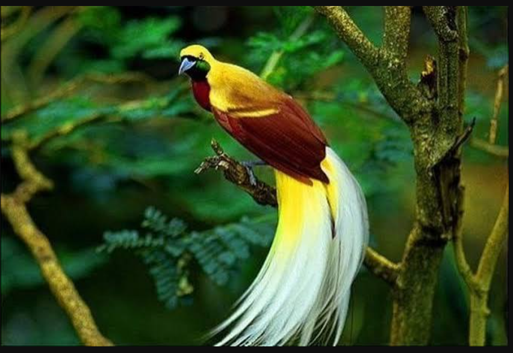

Mamalia
Harimau Sumatra
Harimau Sumatra merupakan satwa asli Indonesia yang hidup di Pulau Sumatra. Sebagai predator, hewan ini berperan penting dalam menjaga keseimbangan populasi hewan lain di habitatnya.
Jelajahi keanekaragaman hewan Indonesia, kenali keunikan satwa Nusantara, dan pelajari cara menjaga kelestariannya untuk masa depan.
Mulai Belajar ↓Mengenal hewan sebagai bagian penting dari kehidupan di Bumi.
Fauna adalah istilah untuk seluruh jenis hewan yang hidup di suatu wilayah atau lingkungan tertentu. Fauna meliputi mamalia, burung, reptil, amfibi, ikan, dan berbagai jenis hewan lainnya.
Indonesia memiliki keanekaragaman fauna yang tinggi karena kondisi geografis dan beragam habitat, seperti hutan hujan, pegunungan, sungai, laut, serta kawasan pesisir.
Setiap hewan mempunyai peran dalam ekosistem, mulai dari menjaga rantai makanan hingga membantu penyebaran biji tumbuhan.
Berikut beberapa contoh hewan yang memiliki keunikan dan peran penting dalam ekosistem.
Harimau Sumatra merupakan satwa asli Indonesia yang hidup di Pulau Sumatra. Sebagai predator, hewan ini berperan penting dalam menjaga keseimbangan populasi hewan lain di habitatnya.

Orangutan hidup di hutan tropis Sumatra dan Kalimantan. Hewan ini memakan buah-buahan dan membantu penyebaran biji yang mendukung regenerasi hutan.

Cenderawasih dikenal karena warna bulu dan penampilannya yang khas. Burung ini menjadi salah satu satwa ikonik Papua dan bagian penting dari keanekaragaman fauna Indonesia.

Komodo merupakan kadal besar yang hidup secara alami di beberapa pulau di Nusa Tenggara Timur. Satwa ini menjadi salah satu kekayaan fauna Indonesia yang perlu dilindungi.
Hewan memberikan banyak manfaat bagi keseimbangan lingkungan dan kehidupan manusia.
Hubungan antara predator dan mangsa membantu menjaga keseimbangan populasi berbagai makhluk hidup.
Lebah, kupu-kupu, dan beberapa hewan lain membantu proses penyerbukan pada tumbuhan.
Sejumlah hewan memakan buah dan membantu menyebarkan biji ke berbagai tempat, sehingga tumbuhan dapat tumbuh kembali.
Setiap hewan memiliki peran dalam ekosistem, baik di hutan, sungai, padang rumput, maupun lautan.
Keanekaragaman hewan menghadapi berbagai ancaman yang dapat merusak habitat dan mengurangi jumlah populasi satwa tertentu.
Melestarikan fauna tidak harus dimulai dari tindakan besar. Kita bisa menjaga kebersihan lingkungan, tidak membeli satwa liar yang dilindungi, mendukung kawasan konservasi, dan menghargai hewan di habitat alaminya.
Kembali ke Beranda